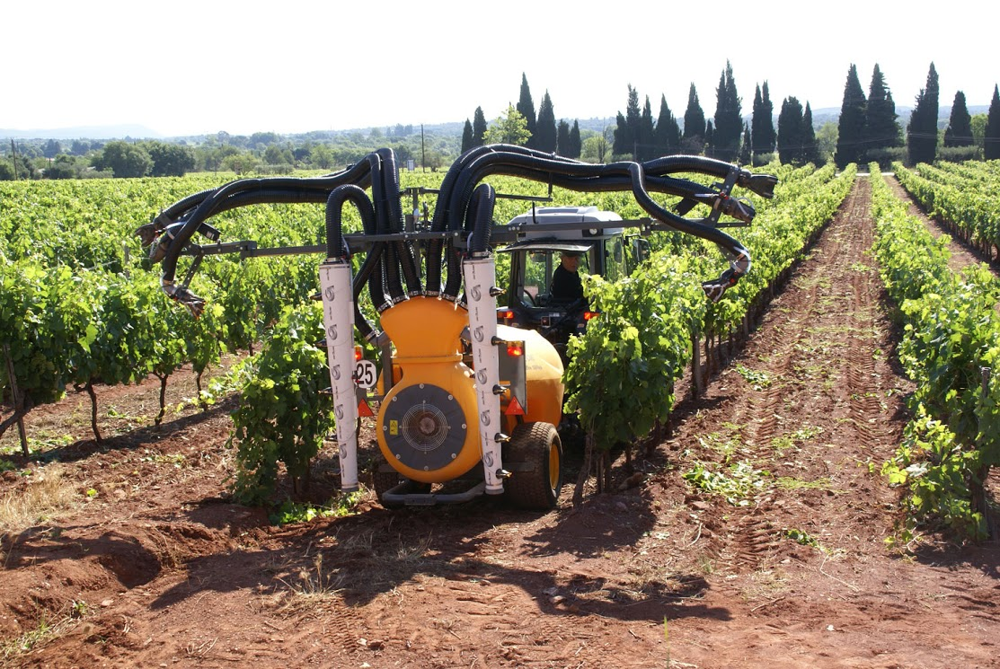
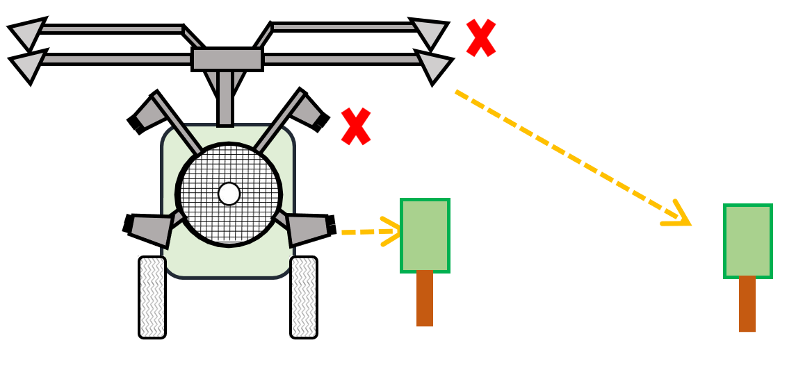
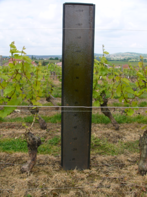

Optimiser sa voûte pneumatique
| Intérêts environnementaux | Intérêts agronomiques | Contraintes de mise en oeuvre | Acceptabilité |
|---|---|---|---|
| Faible, la technologie pneumatique ne permet pas de réduire la dérive | Un bon réglage et un bon entretien permettent d’améliorer la qualité de pulvérisation | Faible (temps en début de saison) | Facile à mettre en œuvre et peu coûteux |
Les voûtes pneumatiques sont très utilisées à l’heure actuelle en vignes larges (près de 70 % des appareils du parc dans les vignobles du pourtour méditerranéen). Le niveau de dérive généré par ce type d’appareil peut être très important à cause de la technologie pneumatique qui impose une vitesse de l’air importante, y compris en début de végétation Il est primordial de bien régler son appareil pour réduire autant que possible les impacts.

Avec une voûte pneumatique, la qualité de pulvérisation est correcte en passage tous les 2 rangs et 3 rangs avec main de retour, mauvaise en passage tous les 3 rangs sans main de retour et médiocre en passage tous les 4 rangs.
Actions complémentaires
Avec certains modèles, il est possible de changer de technologie de pulvérisation et de changer votre voûte pneumatique en voûte en jet porté, avec l’ajout de porte buses.
Ce type d’évolution est encore peu fréquent, mais permet de faire varier la vitesse d’air sans agir sur la taille des gouttes. D’autre part, la possibilité d’utiliser des buses antidérive permet de réduire significativement la dérive sans pénaliser la qualité d’application.
Parlez-en à votre constructeur/revendeur qui vous indiquera les différentes options.

Comment optimiser son appareil ?
Entretenir et régler son appareil en début et en cours de saison
Étalonner le pulvérisateur avant chaque campagne et pendant la saison par une mesure du débit de chaque diffuseur pour vérifier le volume/ha réellement appliqué.
Veiller à ce que la répartition des débits dans les différents organes du pulvérisateur permette de pulvériser la même dose sur chaque face de rang.
Vérifier le bon fonctionnement des organes de protection (grille, prise de force…).
N’oubliez pas de réaliser le contrôle technique périodique de votre appareil (tous les 3 ans), qui est obligatoire !
Traiter dans de bonnes conditions météo
Effectuer le traitement avec la plus faible vitesse de vent possible. Un vent soutenu provoque une forte dérive. La réglementation interdit de traiter par vent au-delà de 19 km/h.
Eviter les interventions aux heures chaudes de la journée. Plus la température est élevée, plus la vitesse d’évaporation des gouttes avant interception par la végétation est importante, surtout pour les faces de rangs traitées par les canons, et donc moins il y aura de produit qui atteint la plante.
Adapter le nombre de diffuseurs à la hauteur de végétation
En début de végétation, fermer les diffuseurs inutiles. Cela permet de limiter le gaspillage de bouillie. Dans tous les cas, les voûtes pneumatiques ne sont pas les pulvérisateurs les plus indiqués pour traiter en début de végétation, en raison des risques de dérive.

Orienter précisément les diffuseurs
A chaque traitement, bien orienter les diffuseurs ouverts vers la végétation. Une pulvérisation d’eau dans la vigne permet de réaliser ce réglage visuellement, éventuellement en s’aidant d’une plaque de fer rouillée. Il est aussi possible de contrôler la répartition du produit dans la végétation à l’aide de papiers hydro-sensibles.

Réduire le flux d’air
En pneumatique, les gouttelettes sont formées par la fragmentation d’une veine de liquide dans un courant d’air rapide (80-120 m/s), générant de fines gouttelettes (100 à 150 µm). Plus le flux est rapide, plus les gouttelettes générées seront fines. On peut réduire la vitesse du flux d’air, en particulier en début de saison.